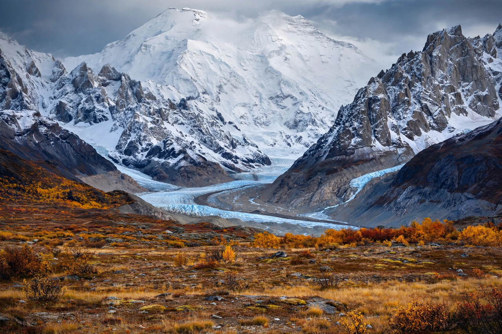

[Image placeholder: The Alaska Range, with Denali at centre]The **Alaska Range** is a 600–700 km arc of mountains in south-central Alaska, curving from the Alaska Peninsula region to the Yukon border. It forms a barrier between the Alaskan interior and the Pacific coast and contains the highest mountains in North America.
Its principal peaks are Denali (6,190 m), Mount Foraker (5,304 m) and Mount Hunter (4,442 m). Much of the central range is protected within Denali National Park and Preserve. The range's great glaciers include the Kahiltna Glacier, the standard climbing approach to Denali.
The range is still being uplifted along the Denali Fault, a major strike-slip system that produced a magnitude-7.9 earthquake in 2002. Its southern slopes catch moist Pacific air, feeding large icefields, while the northern side is drier and colder.
Denali's West Buttress route, pioneered in 1951, is one of the world's most popular high-altitude climbs, though extreme cold and storms make it serious. The first ascent of Denali was in 1913 by Hudson Stuck's party.